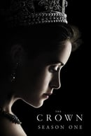
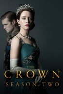
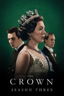

<!DOCTYPE html>
<html lang="en">
<head>
    <meta charset="UTF-8">
    <meta http-equiv="X-UA-Compatible" content="IE=edge">
    <meta name="viewport" content="width=device-width, initial-scale=1.0">
    <link rel="stylesheet" href="./Style/info.css">
    <!-- google font -->
    <link rel="preconnect" href="https://fonts.gstatic.com">
    <link href="https://fonts.googleapis.com/css2?family=Roboto&display=swap" rel="stylesheet">
    <title></title>
</head>
<body>
    
</body>
</html>

<section class="container">
   
        <div class="temporada">
            
                <div class="temporada_descricao">
                    <h4>Primeira Temporada</h4>
                    <p>2016 | 10 episódios</p>
                    <p>A 1ª temporada de The Crown começou a ser exibida em 4 de novembro de 2016.</p>
                    <p>Ao se tornar rainha, a jovem Elizabeth começa a lidar com questões políticas e pessoais que entram em conflito de formas que ela nunca imaginou.</p>
                </div>
        </div>
        <hr>
        <div class="temporada">
            
                <div class="temporada_descricao">
                    <h4>Segunda Temporada</h4>
                    <p>2017 | 10 episódios</p>
                    <p>A 2ª temporada de The Crown começou a ser exibida em 8 de dezembro de 2017.</p>
                    <p>Com o início de uma nova era, a rainha Elizabeth luta para preservar a monarquia e o casamento em um mundo em constante mudança.</p>
                </div>
        </div>
        <hr>
        <div class="temporada">
            
                <div class="temporada_descricao">
                    <h4>Terceira Temporada</h4>
                    <p>2019 | 10 episódios</p>
                    <p>A 3ª temporada de The Crown começou a ser exibida em 17 de novembro de 2019.</p>
                    <p>Ao longo dos anos 60 e 70, a família real enfrenta conflitos, traições e tenta preservar as tradições diante de um mundo em evolução.</p>
                </div>
        </div>
        <hr>
        <div class="temporada">
            
                <div class="temporada_descricao">
                    <h4>Quarta Temporada</h4>
                    <p>2020 | 10 episódios</p>
                    <p>A 4ª temporada de The Crown começou a ser exibida em 15 de novembro de 2020.</p>
                    <p>Nos anos 1980, a rainha Elizabeth bate de frente com a primeira-ministra Margaret Thatcher, e o príncipe Charles vive um tumultuado casamento com Lady Diana Spencer.</p>
                </div>
        </div>
  
</section>